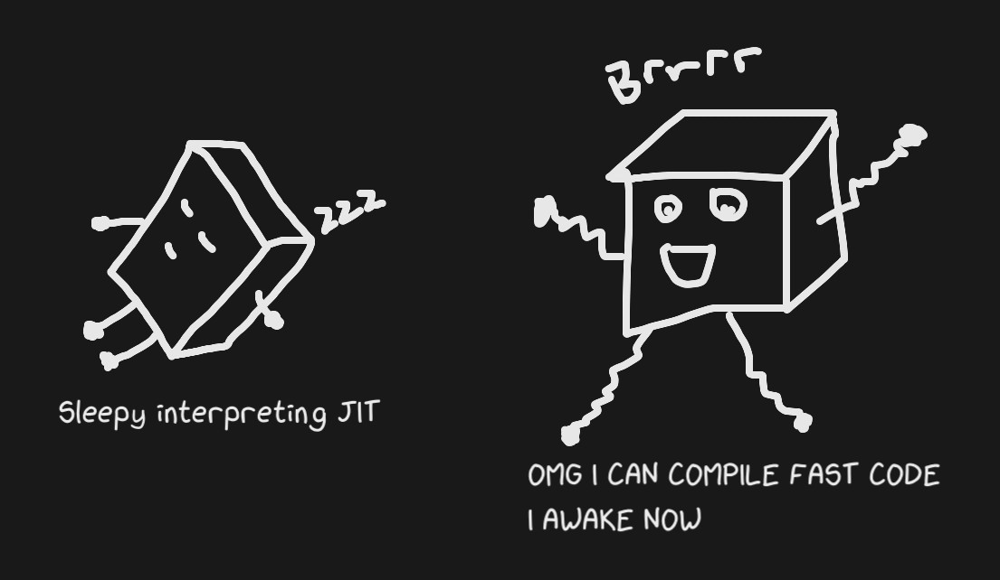

If you are familiar with how JITs generally work (if you get what the title is referring to), I recommend skimming this or going straight to reading How JIT Compilers are Implemented and Fast: Julia, Pypy, LuaJIT, Graal and More
My mentor, Chris, who took me from “what is a JIT” to where I am now once told me that compilers were just bytes in bytes out and not at all low-level and scary. This is actually fairly true, and it's fun to learn about compiler internals and often useful for programmers everywhere!
This blog post gives background on how programming languages are implemented and how JITs work. It'll introduce the implementation details of the Julia language, though it won't talk about specific implementation details or optimizations made by more traditional JITs. Check out How JIT Compilers are Implemented and Fast: Julia, Pypy, LuaJIT, Graal and More to read about how meta-tracing is implemented, how Graal supports C extensions, the relationship of JITs with LLVM and more!
How Programming Languages are Implemented
When we run a program, it’s either interpreted or compiled in some way. The compiler/interpreter is sometimes referred to as the "implementation" of a language, and one language can have many implementations. You may have heard things like "Python is interpreted", but that really means the reference(standard/default) implementation of Python is an interpreter. Python is a language specification and CPython is the interpreter and implementation of Python.
An interpreter is a program that directly executes your code. Well-known interpreters are usually written in C. Ruby, Python and PHP are written in C. Below is a function that loosely models how interpreters work:
func interpret(code string) {
if code == "print('Hello, World!')" {
print("Hello, World");
} else if code == “x = 0; x += 4; print(x)” {
variable_x := 0
variable_x += 4
print(x)
}
}
A compiler is a program that translates code from some language to another language, though it usually refers to a destination language that is a machine code. Examples of compiled languages are C, Go and Rust.
func compile(code string) {
[]byte compiled_code = get_machine_code(code);
write_to_executable(compiled_code);
}
The difference between a compiled and interpreted language is actually much more nuanced. C, Go and Rust are clearly compiled, as they output a machine code file - which can be understood natively by the computer. The compile and run steps are fully distinct.
However, compilers can translate to any target language (this is sometimes called transpiling). Java for example, has a two-step implementation. The first is compiling Java source to bytecode, which is an Intermediate Representation (IR). The bytecode is then JIT compiled - which involves interpretation.
Python and Ruby also execute in two steps. Despite being known as interpreted languages, their reference implementations actually compile the source down to a bytecode. You may have seen .pyc files (not anymore in Python3, they're better hidden) which contain Python bytecode! The bytecode is then interpreted by a virtual machine. These interpreters use bytecode because programmers tend to care less about compile time, and creating a bytecode language allows the engineers to specify a bytecode language that is as efficient to interpret as possible.
Having bytecode is how languages check syntax before execution (though they could technically just do a pass before starting the interpreter). An example below shows why you would want to check syntax before runtime.
sleep(1000)
bad syntax beep boop beep boop
Interpreted languages are typically slower for various reasons, the most obvious being that they're executed in a higher level language that has overhead execution time. The main reason is that the dynamic-ness of the languages they tend to implement means that they need many extra instructions to decide what to do next and how to route data. People still choose to build interpreters over compilers because they're easier to build and are more suited to handle things like dynamic typing, scopes etc (though you could build a compiler that has the same features).
So What is a JIT?
A JIT compiler doesn't compile code Ahead-Of-Time (AOT), but still compiles source code to machine code and therefore is not an interpreter. JITs compile code at runtime, while your program is executing. This gives the JITs flexibility for dynamic language features, while maintaining speed from optimized machine code output. JIT-compiling C would make it slower as we'd just be adding the compilation time to the execution time. JIT-compiling Python would be fast, as compilation + executing machine code can often be faster than interpreting. JITs improve implemnetations in speed by being able to optimize on information that is only available at runtime.
Julia: a JIT Compiler that's Just-in-time
A common theme between compiled languages is that they're statically typed. That means when the programmer creates or uses a value, they’re telling the computer what type it is and that information is guaranteed at compile time.
Julia is dynamically typed, but internally Julia is much closer to being statically typed.
function multiply(x, y)
x * y
end
Here is an example of a Julia function, which could be used to multiply integers, floats, vectors, strings etc (Julia allows operator overloading). Compiling out the machine code for all these cases is not very productive for a variety of reasons, which is what we'd have to do if we wanted Julia to be a compiled language. Idiomatic programming means that the function will probably only be used by a few combinations of types and we don't want to compile something that we don't use yet since that's not very jitty (this is not a real term).
If I were to code multiply(1, 2), then Julia will compile a function that multiplies integers. If I then wrote multiply(2, 3), the already-compiled code will be used. If I added multiply(1.4, 4), another version of the function will be compiled. We can observe what the compilation does with @code_llvm multiply(1, 1), which generates LLVM Bitcode (not quite machine code, but a lower-level Intermediate Representation).
define i64 @julia_multiply_17232(i64, i64) {
top:
; ┌ @ int.jl:54 within `*'
%2 = mul i64 %1, %0
; └
ret i64 %2
}
And with multiply(1.4, 4), you can see how complicated it can get to compile even one more function. In AOT compiled Julia, all* of these combinations would have to live in the compiled code even if only one was used, along with the control flow to delegate.
define double @julia_multiply_17042(double, i64) {
top:
; ┌ @ promotion.jl:312 within `*'
; │┌ @ promotion.jl:282 within `promote'
; ││┌ @ promotion.jl:259 within `_promote'
; │││┌ @ number.jl:7 within `convert'
; ││││┌ @ float.jl:60 within `Float64'
%2 = sitofp i64 %1 to double
; │└└└└
; │ @ promotion.jl:312 within `*' @ float.jl:405
%3 = fmul double %2, %0
; └
ret double %3
}
The general strategy of “assume a type and compile/behave based on that” is called type inferencing, which Julia mildly uses in the examples above. There are a lot of other compiler optimizations that are made, though none of them are very specific to JITs as Julia may be better described as a lazy AOT compiler.
The simplicity of this kind of jitting makes it easy for Julia to also supply AOT compilation. It also helps Julia to benchmark very well, definitely a tier above languages like Python and comparable to C.
So What is a JIT? Take Two.
Julia is actually the jittiest JIT I'll discuss, but not the most interesting as a JIT. It compiles code right before the code needs to be used -- just in time. Most JITs however (Pypy, Java, JS Engines), are not at all about compiling code just-in-time, but compiling optimal code at an optimal time. In some cases that time is never. In other cases, compilation occurs more than once. In many cases where code is compiled, it doesn't occur until after the source code has been executed numerous times, and the JIT will stay in an interpreter as the overhead to compilation is too high to be valuable.

The other aspect at play is generating optimal code. Assembly instructions are not created equal, and compilers will put a lot of effort into generating well-optimized machine code. Usually, it is possible for a human to write better assembly than a compiler (though it would take a fairly smart and knowledgeable human), because the compiler cannot dynamically analyze your code. By that, I mean things like knowing the possible range of your integers or what keys are in your map, as these are things that a computer could only know after (partially) executing your program. A JIT compiler can do those things because it interprets your code first and gathers data from the execution. Thus, JITs are expensive in that they interpret, and add compilation time to execution time, but they make it up in highly optimised compiled code. With that, the timing of compilation is also dependent on whether the JIT has gathered enough valuable information.
The cool part about JITs is that I was sort of lying when I said a JIT implementation of C could not be faster than existing compiled implementations. It would not be feasible to try, but jit-compiling C in the way I just described is not a strict superset of compiling a language and thus it is not logically impossible to compile code fast enough to make up for the compile+profile+interpreting time. If I "JIT compiled" C similarly to how Julia does it (statically compile each function as it's called), it would be impossible to make it faster than compiled-C as the compile-time is non-negative and the generated machine code is essentially the same.
Pogo
Though jitting C is not feasible, one can find a middle ground through Profile Guided Optimization (PGO, cutely [and uncommonly] pronounced “pogo”). Instead of profiling while executing, you compile a program with PGO profiling, run that program and then recompile the original program with profiled data passed in. This is effective at reducing compiled-code size and improving branch prediction.
Warm it up
JITs have a concept of warming up. Because intepretation and profiling time is expensive, JITs will start by executing a program slowly and then work towards "peak performance". For JITs with interpreted counterparts like Pypy, the JIT without warmup performs much worse at the beginning of execution due to the overhead of profiling. It's also the reason that JITs will consume signifcantly more memory.
Warmup adds complexity to measuring efficiency of a JIT! It's fine if you're measuring the performance of generating the mandelbrot set, but becomes painful if you're serving a web application and the first N requests are painfully slow. It means that Javascript is relatively less performant as a command line tool than it is for a webserver. It’s complicated by the fact that the performance doesn’t strictly increase. If Pypy decides it needs to compile many things all at once after JITs compiling some functions, then you might have a slow-down in the middle. It also makes benchmark results more ambiguous, as you have to check if the jitted languages were given time to warmup, but you’d also want to know if it took an unseemly amount of time to warmup. Optimizing your compiled code and warmup speed is unfortunately zero-sum(or at least small-sum) by nature. If you try to get your code to compile sooner, less data will be available, the compiled code will not be as efficient and peak performance will be lower. Aiming for higher peak performance of course, often means higher profiling costs.
Java and Javascript engines are examples of JITs that have put really good care into warmup time, but you may find that languages built for academic uses have monstrous warmup times in favour of snazzy peak performances.
> More JITs: How JIT Compilers are Implemented and Fast: Julia, Pypy, LuaJIT, Graal and More
- Talks about implementation of tracing JITs and meta-tracing JITs, specifically LuaJIT and Pypy
- Introduces GraalVM, Hotspot and goes deeper into Javascript Engines. Goes through Tiering, Seas of Nodes, deoptimization and inlining.